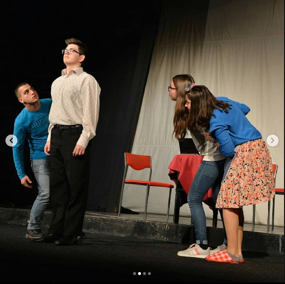
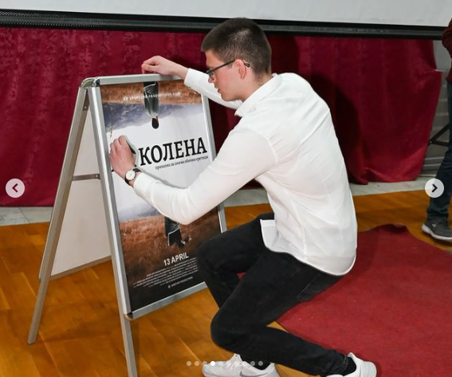
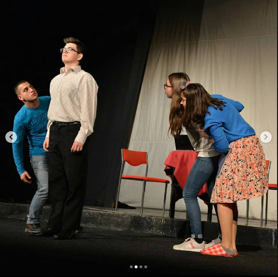
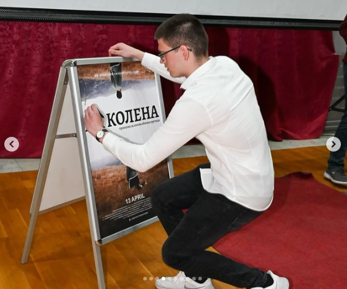

Мојот живот е исполнет со различни вештини и интереси кои ме обликуваат и ми носат задоволство. Прво, страста за возење мотор ми донесе чувство на слобода и авантура, истовремено развивајќи ги моите рефлекси и способност за брзо прилагодување. Играњето билјард ми помага да развијам прецизност и стратегиско размислување. Оваа игра бара концентрација и прецизно планирање на потезите, што ми помага да се фокусирам и да донесувам правилни одлуки под притисок. Видеоигрите се уште едно хоби кое го негува моето стратешко размислување и тимска работа, истовремено овозможувајќи ми релаксација и забава. Покрај тоа, едитирањето на слики и видеа ми дозволува да ја изразам мојата креативност користејќи софтвери како Adobe Photoshop и Premiere Pro. Фотографирањето и снимањето ми помагаат да гледам на светот од различни агли и да фатам уникатни моменти. Овие вештини развиваат мојата креативност и внимание на детали. Конечно, глумењето ми дозволува да се изразам уметнички и да развијам емпатија и разбирање на различни карактери. Оваа страст ми помага да бидам подобар комуникатор и да се поврзам со луѓето околу мене. Сите овие вештини и интереси ме прават уникатен и ми помагаат да се развивам како личност, со голема љубов и страст за нови предизвици.
 


